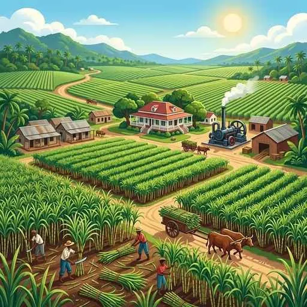

2. アジア州
日本も属するアジア州は、世界最大の人口と多様な自然環境、宗教、文化を持つエネルギッシュな地域です。急激な発展を遂げる東アジアから、多様な農業が展開される東南アジア、情報技術で躍進する南アジア、そして乾燥した砂漠と石油が特徴の西アジアまで、テストに必須のポイントを地域ごとに整理して解説します！
1. 東アジア（中国と韓国）
東アジアは、急速な経済成長によって世界経済の中心的な存在となっています。特に中国は「世界の工場」と呼ばれ、大きな影響力を持っています。
図1：香港に隣接し、経済特区として急速にハイテク都市へ発展した「深セン（シェンチェン）」
① 中国（中華人民共和国）
- 民族構成と人口政策：人口の9割以上を漢民族（かんみんぞく）が占めます。かつて人口の急増を抑えるために、1組の夫婦に子どもを1人までに制限する「一人っ子政策」（1979〜2015年）を行っていました。通貨単位は「元（げん）」です。
- 経済成長の仕組み：沿岸部に外資や技術を呼び込むための優遇地域「経済特区（けいざいとっく）」を設けました。香港の隣にある深セン（シェンチェン）はその代表格です。さらに、農村部で生まれた中小企業である「郷鎮企業（ごうちんきぎょう）」も成長に貢献しました。
- 格差の是正：沿岸部の都市が富む一方で、内陸部との深刻な経済格差が生じました。この格差を埋めるため、内陸部を大規模開発する「西部大開発（せいぶだいかいはつ）」が推進されています。また、農村から都市部へ働きに出る労働者は「民工（みんこう／農民工）」と呼ばれます。
- 地形と農業：中国には、華北を流れる古代文明発祥の黄河と、華南を流れるアジア最長の長江があります。雨が少なく乾燥しやすい華北では畑作（小麦など）、温暖で水が豊富な華南では稲作（米）が盛んです。
- 返還と対外関係：1997年には金融・貿易のハブであった香港（ホンコン）がイギリスから返還されました。また、東南アジアなどに移住して現地経済で活躍する中国系の人々を華人・華僑（かじん・かきょう）と呼びます。
② 韓国（大韓民国）
首都はソウル。通貨単位は「ウォン」。朝鮮半島は北緯38度付近の軍事境界線によって大韓民国と朝鮮民主主義人民共和国（北朝鮮）に分断されています。伝統的な衣装はチマ・チョゴリ（女性用）やハンボクです。
2. 東南アジア（農業と多様な宗教）
赤道に近い東南アジアは、豊かな水資源と温暖な気候を利用した農業や、植民地時代の名残であるプランテーションが特徴です。

図2：大規模な農園で特定の商品作物を育てる「プランテーション」の様子
- 農業の工夫：大河の河口付近の肥沃な三角州（デルタ）で稲作が盛んです。同じ土地で年に2回米を作る「二期作（にきさく）」も行われます。また、かつて欧米の植民地だった時代に開かれた、特定の商品作物を大規模に栽培する巨大農園「プランテーション」が多くあります。
- 主要な商品作物：マレーシアなどで洗剤や食用油の原料となる油やし（パーム油）、ベトナムなどが世界有数の輸出国であるコーヒー豆などがあります。
- ドイモイ政策：ベトナムでは、社会主義を維持しながら市場経済を導入する「ドイモイ（刷新）」と呼ばれる改革を行い、急成長を遂げました。
- 経済協力とルックイースト：東南アジア諸国は、地域協力を強めるためASEAN（東南アジア諸国連合）を結成しています。また、マレーシアは日本や韓国の集団意識や勤労の姿勢を手本に工業化を目指す「ルックイースト政策」を掲げました。シンガポールなどは、アジアでいち早く工業化した地域「アジアNIES」の一員です。
- 東南アジアの多様な宗教：地域により信仰が大きく異なります。
- イスラム教：インドネシア、マレーシア
- キリスト教：フィリピン（※元スペイン・アメリカの植民地であった影響）
- 仏教：タイ、ミャンマー、カンボジア（アンコール・ワット遺跡がある）
3. 南アジア（インドの成長と文化）
南アジアの中心国であるインドは、人口が世界一（2023年推計で中国を抜く）となり、世界中から注目されています。
図3：インドのシリコンバレーとも呼ばれ、ICT産業が急成長する都市「ベンガルール」
- ICT産業の躍進：インド南部の都市ベンガルールを中心に、ソフトウェア開発などのICT（情報通信技術）産業が爆発的に成長しています。英語話者が多く、数学の教育水準が高く、アメリカとの時差を利用して夜間に業務をバトンタッチできることが強みです。
- 宗教と身分制度：人口の大多数がヒンドゥー教を信仰しています。ヒンドゥー教では牛を神聖な動物として食べることを避けます。女性の伝統衣装はサリーです。また、かつての厳格な身分制度「カースト制度」の名残や意識が、法的に禁止された現代でも農村部を中心に残っており、社会的な課題となっています。
- インドの農業：雨の多いアッサム地方やスリランカでは茶、比較的乾燥している北西部やパキスタン国境付近では綿花（めんか）の栽培が盛んです。
4. 西アジア（石油資源とイスラム社会）
西アジアは大部分が乾燥帯（砂漠気候）であり、乾燥に適した生活習慣や、豊富な石油資源、イスラム教を規範とする社会が特徴です。
- イスラム教の暮らし：経典であるコーランの教えに従って生活し、毎年特定の月（ラマダン）には日の出から日没まで断食を行います。女性は髪や肌を覆う「チャドル（ヒジャブ）」を着用します。
- 原油資源とOPEC：ペルシア湾周辺のサウジアラビアやイランなどは、世界最大級の原油産出地です。産油国は、自国の石油の利益を守るためにOPEC（石油輸出国機構）を結成しています。日本が輸入する原油の約9割は、この西アジア（中東）地域に依存しています。
- 乾燥地の農業と牧畜：水が得られる場所でデーツ（ナツメヤシ）などを育てるオアシス農業や、羊やヤギを連れて草地を求めて移動する遊牧（ゆうぼく）が行われています。
5. アジアのその他の地形・資源
- ヒマラヤ山脈：インドと中国の境にそびえる、世界で最も標高が高い険しい山脈。
- ウラル山脈：ヨーロッパ州とアジア州の境界とされる山脈。
- 環太平洋造山帯：太平洋を取り囲む、火山や地震が非常に活発なエリア。インドネシアなどが含まれます。
- レアメタル（希少金属）：カザフスタンやウズベキスタンなどの中央アジアで豊富に産出され、スマートフォンなどの電子部品に欠かせない資源です。
🔥 定期テスト対策・暗記のコツ
① 中国の農業の境界（重要！）
「華北（黄河流域）＝乾燥＝畑作・小麦」「華南（長江流域）＝温暖多湿＝稲作・米」の対比が非常によく狙われます！テストでは「黄河と長江の位置」を地図で選ぶ問題と合わせて出題されます。
② 東南アジアの宗教分布の暗記
東南アジアは多文化なので、テストで宗教を問われやすいです。「フィリピン＝キリスト教」「インドネシア・マレーシア＝イスラム教」「タイ・ミャンマー・カンボジア＝仏教」を完璧に整理しておきましょう！
③ インドの産業と作物
「IT産業の都市＝ベンガルール（ICT）」をスペルや漢字で書けるようにしましょう。また、アッサム地方の「茶」と、乾燥地の「綿花」の栽培適地の違いも重要ポイントです！